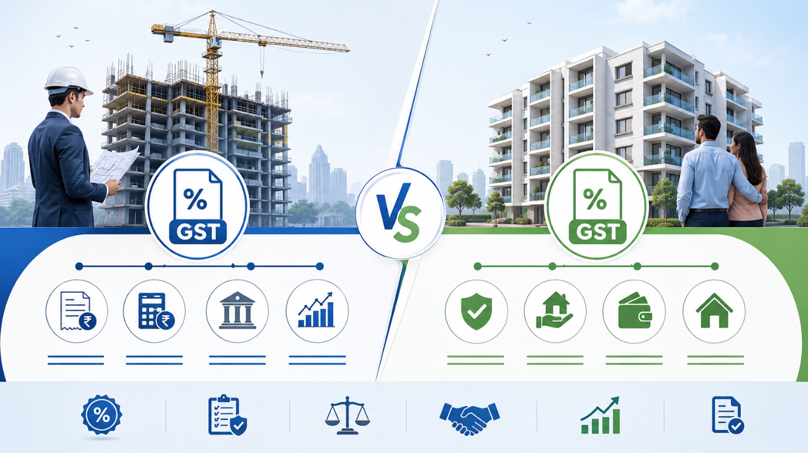
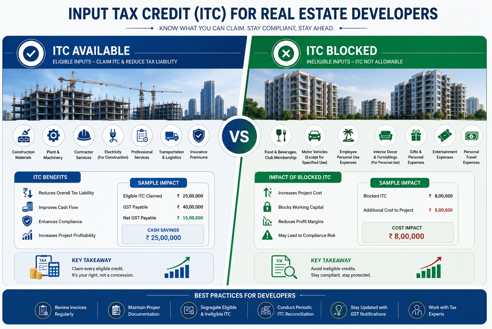

Real estate compliance starts with one taxable-stage question.
Builders and developers work inside one of the most layered tax structures in the GST regime. The same product, a flat, can attract GST while it is under construction and become outside GST once the completion or occupancy certificate is issued.
Beyond GST, a builder operates across RERA, local municipal approvals, environmental clearances, and works contract regulations at the same time. Missing any one layer is not a small paperwork gap. It can become a tax, penalty, project, or buyer-trust liability.
Use the right code before the invoice goes out.
Real estate transactions are service-heavy, so SAC codes dominate over HSN codes. Construction activity broadly falls under SAC 9954, but material and sub-classification checks still matter.
| Transaction | SAC / HSN code |
|---|---|
| Construction of residential complex | 9954 |
| Commercial construction service | 9954 |
| Works contract service | 9954 |
| Cement | 2523 |
| Structural steel | 7214 |
| Bricks | 6901 |
| Sand and gravel | 2505 |
| Paint and varnish | 3209 |
Wrong sub-code, wrong risk.
Using the wrong sub-code on a works contract invoice is one of the common triggers for mismatch queries and scrutiny in this sector.
| Business activity | NIC 2008 code |
|---|---|
| Residential building development | 41001 |
| Commercial building construction | 41002 |
| Real estate activities on own property | 68100 |
The rate table changes with property stage and project type.
The shift to 1% and 5% residential rates after April 2019 came with removal of ITC for those residential categories. Builders who earlier priced projects around ITC had to treat input cost more carefully.

| Property type | Applicable GST rate |
|---|---|
| Affordable housing under PMAY scheme | 1% (no ITC) |
| Other residential property under construction | 5% (no ITC) |
| Commercial property under construction | 12% |
| Ready-to-move property after completion certificate or occupancy certificate | Exempt / outside GST |
| Works contract, general construction | 18% |
| Works contract, specified government projects | 12% |
GST registration is only one layer of builder compliance.
GST registration is mandatory where turnover crosses the applicable threshold, interstate services are supplied, or works contract activity brings registration into scope. Most active builders cross the threshold well within the first project.
Project registration
Required for covered projects, including projects exceeding 500 sq. m or 8 units, subject to state rules.
Tax registration
Register when liability arises. Delayed registration can attract interest and penalties from the liability date.
Approvals and licences
Track shop and establishment licence, building plan approval, municipal permissions and environmental clearance.
ITC is where residential developers often lose money quietly.
For residential developers operating at 5% GST, blocked ITC means input costs become a straight expense. Pricing strategy must account for that fully instead of assuming credit will offset material and service costs.

Claim only where the project and expense allow it.
- Construction materials for eligible commercial projects where GST is charged with ITC.
- Business overheads such as office rent, professional fees, software and administration tools.
Residential and immovable property restrictions bite hard.
- Construction of residential complexes intended for sale under the no-ITC rate structure.
- Works contract services received for construction of immovable property, where blocked by law.
- Materials permanently embedded into residential structures in most cases.
The same mistakes appear again and again in scrutiny notices.
These are not theoretical risks. They are the operational misses that turn normal project accounting into tax demand, interest, penalty, cash flow disruption, and reputation pressure.
Collection without timely deposit
GST collected from flat buyers must be deposited within the proper timelines.
Wrong residential ITC claim
Claiming ITC on residential construction inputs after the rate change is a high-risk error.
Poor SAC classification
Invoices without the correct SAC and supply description make audits harder to defend.
Advance payment gaps
Each booking instalment can create a GST reporting event; do not wait for final handover.
Ignoring joint development taxability
Landowner and developer obligations depend on the agreement structure and must be reviewed.
Assuming GST covers everything
GST exemption on a completed sale does not remove RERA, municipal or documentation compliance.
A clean builder invoice should explain the tax position at a glance.
Every GST invoice raised by a builder should identify the parties, project, unit, SAC, construction stage, taxable value, GST split, milestone and document number clearly enough for both buyer and audit review.
| Invoice field | What to capture |
|---|---|
| Supplier details | Builder GSTIN, legal name, address and sequential invoice number. |
| Buyer details | Buyer name, address and GSTIN if the buyer is registered. |
| Project details | Project name, unit number, construction stage and RERA reference where applicable. |
| Classification | SAC 9954 with the applicable sub-classification and description of supply. |
| Tax calculation | Taxable value, GST rate, CGST and SGST split or IGST, and total invoice value. |
| Payment milestone | Foundation, structure, finishing, handover, booking or other agreed milestone. |
Quick answers for builder and buyer conversations.
Use these answers as working guidance, then verify the final position against the project documents, tax notifications, and state-specific rules.
Is GST applicable on a ready-to-move flat?
No. Once the competent authority issues the completion certificate or occupancy certificate, the property is treated as a completed immovable asset and the sale is outside GST.
Can a flat buyer claim ITC on GST paid?
No for personal residential purchases. ITC is generally relevant for registered business use and eligibility must be checked against the specific supply, project and restriction rules.
What GST applies on commercial shops in a mixed-use project?
Under-construction commercial units commonly attract 12% GST, subject to project structure and notification checks. After completion certificate, the completed-property treatment applies.
Are joint development agreements taxable under GST?
Yes, JDAs can have specific GST implications for both landowner and developer. The answer depends on the structure, timing, consideration, and contractual obligations.
Need this converted into a project checklist or invoice review?
Message TaxBro with the project type, state, construction stage, rate charged, invoice sample and RERA status. We can help you map the practical compliance flow.